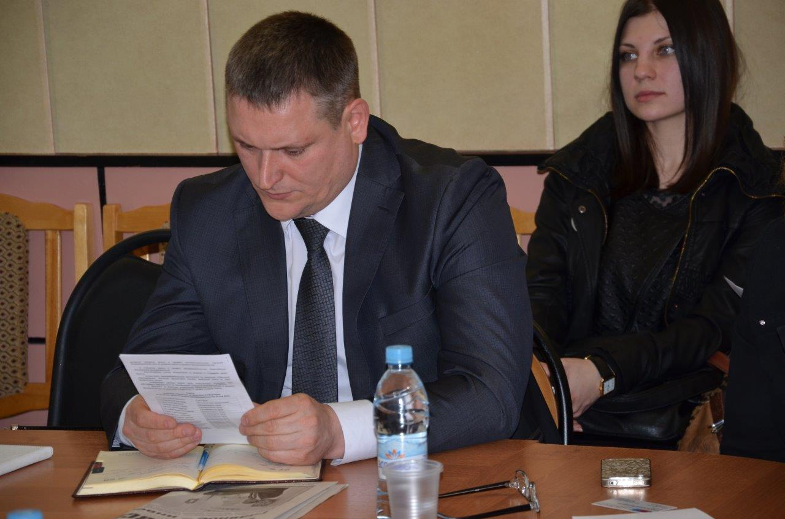

Навстречу дню российского предпринимательства!
В соответствии с Указом президента Российского Федерации от 18.10.2007 г. №1381 26 мая установлен профессиональный праздник – День российского предпринимательства.
В текущем году по сложившейся традиции во всех муниципальных образованиях Тамбовской области проходят конференции посвященные дню российского предпринимательства.
Участие в совещаниях принимает директор Тамбовского областного ГУП «Фонд содействия кредитованию малого и среднего предпринимательства Тамбовской области» Андрей Михайлович Блудов.
В рамках проводимых конференций до предпринимателей доводится информация о мерах поддержки оказываемых Фондам, а именно о предоставлении поручительств по кредитным договорам, договорам финансовой аренды (лизинга), по договорам о предоставлении банковской гарантии.
Кроме того особое внимание уделяется созданию в регионе нового инструмента поддержки малого бизнеса - Фонда микрофинансирования.
Запуск Фонда микрофинансирования планируется на второе полугодие текущего года. Он будет предоставлять микрозаймы в сумме до трёх миллионов рублей, сроком до одного года, ставка по микрозайму не будет превышать ключевую ставку Банка России.
На снимках рабочие моменты конференции посвященной дню российского предпринимательства в городе Рассказово.
